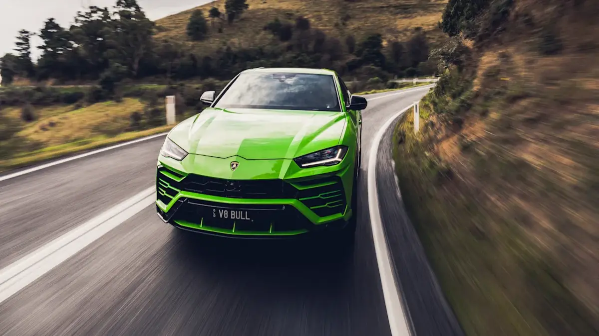
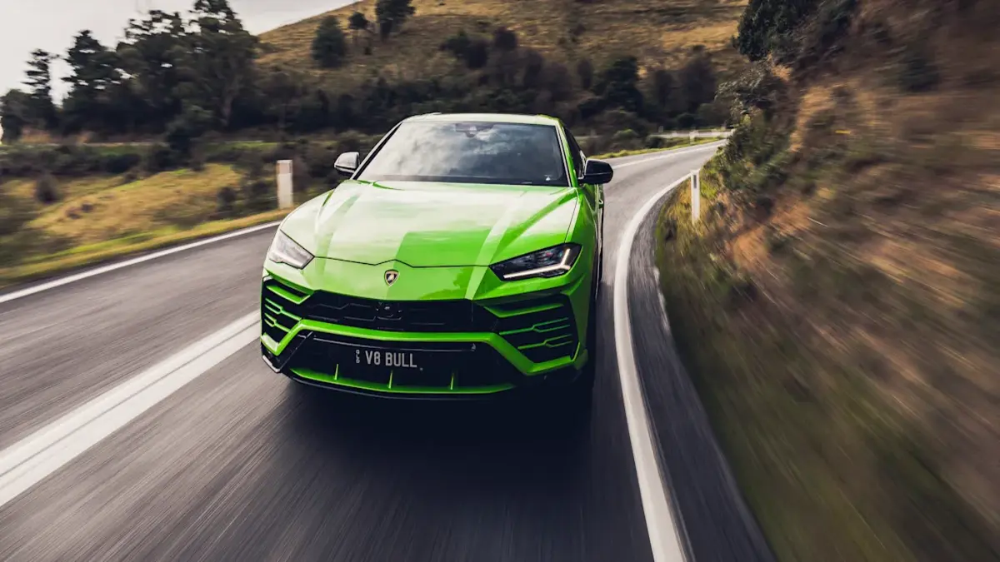

Description
The Urus is a luxury SUV produced by the Italian sports car manufacturer Lamborghini. This vehicle is designed to offer the ultimate in performance, handling, and style. On the exterior, the Urus has a bold and aggressive look that is unmistakably Lamborghini. It has a low-slung profile, with sharp, angular lines that give it a sleek and modern feel. The vehicle also has a range of performance-oriented features, such as large air intakes, a rear diffuser, and a massive rear spoiler. Under the hood, the Urus is powered by a 4.0-liter V8 engine that delivers an incredible 641 horsepower. This engine provides lightning-fast acceleration and blistering top speeds, making the Urus one of the fastest SUVs on the market. The vehicle also has a range of advanced performance features, such as a sport-tuned suspension, advanced all-wheel drive system, and an adaptive air suspension. Inside, the Urus is just as impressive as its exterior and performance. It has a spacious and luxurious cabin that is filled with high-quality materials and cutting-edge technology. The seats are supportive and comfortable, and the dashboard and controls are sleek and intuitive. The vehicle also has a range of advanced features, such as a panoramic sunroof, a premium sound system, and a rear-seat entertainment system. Overall, the Lamborghini Urus is a truly exceptional SUV that offers outstanding performance, handling, and style. It is a great choice for those who demand the very best in their vehicles and want to experience the ultimate in driving excitement and enjoyment.
Features
- 5 Seats
- 650 BHP
- 4.0-litre twin turbocharged V8
- 0-60 mph in 3.2 seconds
Price
€340,000.00
Images
 
